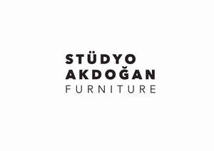

Trade Mark Journal No.2025/049 5 December 2025
UK00004299627 24 November 2025 (20,35)

- Class 20
- Furniture; Mattresses; pillows; air mattresses and cushions, not for medical purposes; water beds; Mirrors; Beehives; artificial honeycombs and sections of wood for honeycombs; Bouncing chairs for babies; playpens for babies; cradles; infant walkers; Display boards; frames for pictures and paintings; identity plates, identification bracelets, name plates, identification tags, made of wood or synthetic materials; Packaging containers of wood or plastics, casks for use in transportation or storage, barrels, storage drums, tanks, boxes, storage containers, transportation containers, chests, loading pallets and closures for the aforementioned goods, of wood or plastics; furniture fittings not of metal; plastic hardware for blinds; window hardware (non-metallic); Ornaments and decorative goods of wood, cork, reed, cane, wicker, horn, bone, ivory, whalebone, shell, amber, mother-of-pearl, meerschaum, beeswax, plastic or plaster namely figurines, holiday ornaments for walls, sculptures, trophies; Baskets, not of metal, fishing baskets; Kennels, nesting boxes and beds for household pets; Portable ladders and mobile boarding stairs of wood or synthetic materials; Bamboo curtains; roller indoor blinds [for interiors]; slatted indoor blinds; vertical indoor blinds; bead curtains for decoration; curtain hooks; curtain rings; curtain tie-backs; curtain rods; Non-metal wheel chocks; mechanisms (non-metallic, non-electric) for opening doors and windows.
- Class 35
- Provision of an online marketplace for buyers and sellers of goods and services; The bringing together, for the benefit of others, of a variety of goods, namely, Furniture, Mattresses, pillows, air mattresses and cushions, not for medical purposes, water beds, Mirrors, Beehives, artificial honeycombs and sections of wood for honeycombs, Bouncing chairs for babies, playpens for babies, cradles, infant walkers, Display boards, frames for pictures and paintings, identity plates, identification bracelets, name plates, identification tags, made of wood or synthetic materials, Packaging containers of wood or plastics, casks for use in transportation or storage, barrels, storage drums, tanks, boxes, storage containers, transportation containers, chests, loading pallets and closures for the aforementioned goods, of wood or plastics; furniture fittings not of metal; plastic hardware for blinds; window hardware (non-metallic), Ornaments and decorative goods of wood, cork, reed, cane, wicker, horn, bone, ivory, whalebone, shell, amber, mother-of-pearl, meerschaum, beeswax, plastic or plaster namely figurines, holiday ornaments for walls, sculptures, trophies, Baskets, not of metal, fishing baskets, Kennels, nesting boxes and beds for household pets, Portable ladders and mobile boarding stairs of wood or synthetic materials, Bamboo curtains, roller indoor blinds [for interiors], slatted indoor blinds, vertical indoor blinds, bead curtains for decoration, curtain hooks, curtain rings, curtain tie-backs, curtain rods, Non-metal wheel chocks, mechanisms (non-metallic, non-electric) for opening doors and windows, enabling customers to conveniently view and purchase those goods; all the aforementioned services may be provided by retail stores, wholesale outlets, by means of electronic media or through mail order catalogues.
STÜDYO AKDOĞAN MOBİLYA TASARIM ÜRETİM TİCARET ANONİM ŞİRKETİ
Representative: Joost Muylle